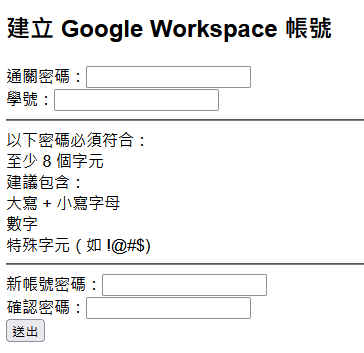

HTML and CSS <<
Previous Next >> Waitress
Project
請協助撰寫一個 Python Flask 網頁應用程式，前端表單需包含：
1. 一個「通關密碼」輸入欄位（用於驗證操作權限）
2. 一個可填入使用者學號的欄位
3. 一個用於設定新電子郵箱密碼的欄位
4. 一個用於確認新電子郵箱密碼的欄位
使用者填寫上述欄位並提交表單後，系統應自動於 Google Workspace 平台建立對應的 email 帳號。

專案提案書：自動化 Google Workspace 帳號建立 Flask 應用程式
一、專案背景與目標
隨著組織規模成長，IT 部門需經常協助新員工建立 Google Workspace（G Suite）電子郵箱帳號。為提升效率、降低人為疏失及強化資安控管，本專案擬開發一個簡易 Web 應用程式，允許經授權者透過表單操作，自動於 Google Workspace 建立新 email 帳號。
二、需求說明
1. 前端表單功能：
- 通關密碼欄位（授權驗證）
- 可填入學號數字的欄位
- 電子郵箱密碼欄位
- 確認電子郵箱密碼欄位
- 按下送出後，系統自動於 Google Workspace 建立對應帳號
2. 安全性設計：
- 必須驗證通關密碼
- 僅允許授權人員操作 (例如: 只允許在特定網段進行操作)
- 檢查 email 格式與密碼強度
- 禁止重複帳號建立
- 僅允許數字做為帳號前綴
三、技術規劃
1. 技術需求
- Python 3.x
- Flask — 前後端 Web 框架
- google-api-python-client — Google Workspace API 操作
- google-auth — 驗證與授權
- Jinja2 — 表單模板（隨 Flask 內建）
- pip — Python 套件管理
2. 開發與部署環境
- 建議部署於安全的內部伺服器或 Docker 容器
- 僅開放組織內部網路存取
四、安裝說明
1. Python 套件安裝
請於專案目錄下執行：
pip install Flask google-api-python-client google-auth
如需管理虛擬環境，建議搭配 venv 或 conda 使用。
2. Google Workspace API 準備
1. 建立 Google Cloud Platform 專案並啟用 Admin SDK API
2. 建立 Service Account，下載憑證檔（JSON）
3. 設定 Domain-wide Delegation（網域代理授權）
4. 於 Google Workspace 管理控制台授權 API 的 OAuth2 Scope：
- https://www.googleapis.com/auth/admin.directory.user
五、各階段程式碼設計
1. 表單頁面（Flask/Jinja2）
python name=templates/form.html
<!doctype html>
<title>建立 Google Workspace 帳號</title>
<h2>建立 Google Workspace 帳號</h2>
<form method="POST">
<label>通關密碼：<input type="password" name="secret" required></label><br>
<label>學號：<input type="text" name="prefix" required></label><br>
<hr>
以下密碼必須符合：<br>
至少 8 個字元<br>
建議包含：<br>
大寫 + 小寫字母<br>
數字<br>
特殊字元（如 !@#$)<br>
<hr>
<label>新帳號密碼：<input type="password" name="account_password" required></label><br>
<label>確認密碼：<input type="password" name="confirm_password" required></label><br>
<input type="submit" value="送出">
</form>
{% with messages = get_flashed_messages() %}
{% if messages %}
<ul>
{% for message in messages %}
<li>{{ message }}</li>
{% endfor %}
</ul>
{% endif %}
{% endwith %}
2. Flask 應用程式主體
python name=app.py
from flask import Flask, render_template, request, redirect, url_for, flash
from google.oauth2 import service_account
from googleapiclient.discovery import build
import os
app = Flask(__name__)
app.secret_key = os.urandom(24)
# 組態設定
DOMAIN = "your_domain_name"
ADMIN_EMAIL = "your_admin_email"
SERVICE_ACCOUNT_FILE = "C:/your_account_file_directory/service.json"
PASSWORD_SECRET = "your_password_secret"
SCOPES = ['https://www.googleapis.com/auth/admin.directory.user']
def create_user(email_prefix, password):
credentials = service_account.Credentials.from_service_account_file(
SERVICE_ACCOUNT_FILE, scopes=SCOPES)
delegated_credentials = credentials.with_subject(ADMIN_EMAIL)
service = build('admin', 'directory_v1', credentials=delegated_credentials)
user_body = {
"primaryEmail": f"{email_prefix}@{DOMAIN}",
"name": {
"givenName": email_prefix,
"familyName": "User"
},
"password": password
}
user = service.users().insert(body=user_body).execute()
return user
@app.route('/', methods=['GET', 'POST'])
def index():
if request.method == 'POST':
secret = request.form['secret']
prefix = request.form['prefix']
account_password = request.form['account_password']
confirm_password = request.form['confirm_password']
# 權限驗證
if secret != PASSWORD_SECRET:
flash("通關密碼錯誤！")
return redirect(url_for('index'))
if not prefix.isdigit():
flash("請輸入您的學號")
return redirect(url_for('index'))
# 密碼確認
if account_password != confirm_password:
flash("兩次密碼不一致，請重新確認！")
return redirect(url_for('index'))
# 密碼驗證（可加入更多規則）
if len(account_password) < 8:
flash("密碼長度必須至少 8 個字元！")
return redirect(url_for('index'))
try:
result = create_user(prefix, account_password)
flash(f"帳號建立成功: {result['primaryEmail']}")
except Exception as e:
flash(f"建立帳號失敗: {str(e)}")
return redirect(url_for('index'))
return render_template('form.html')
if __name__ == '__main__':
app.run(debug=True)
3. 進階安全考量建議
- 密碼建議採用強度檢查（可用 Python 密碼強度套件輔助）
- 增加帳號是否已存在的查核（可用 Google Workspace API 查詢帳號）
- 日誌記錄所有操作，便於稽核
- 部署於 HTTPS 環境
- 建議將通關密碼與 API 金鑰資訊寫於環境變數或安全檔案，避免硬編碼
六、操作說明
1. 啟動服務
python app.py
預設於 http://localhost:5000 提供服務。
2. 使用流程
1. 開啟瀏覽器進入應用頁面
2. 輸入通關密碼
3. 輸入欲建立 email 的數字帳號前綴（如 123）
4. 設定對應帳號密碼
5. 按下送出，成功後將顯示建立結果
七、時程規劃（建議）
| 階段 |
工作項目 |
預計工期 |
| 需求確認 |
討論細節與權限 |
1 天 |
| 環境建置 |
API/Flask/金鑰設定 |
1 天 |
| 程式開發 |
表單與自動化功能撰寫 |
2 天 |
| 測試驗證 |
各種狀況測試與修正 |
1 天 |
| 上線部署 |
內部伺服器或容器部署 |
1 天 |
| 文件彙整 |
操作手冊與維運說明 |
1 天 |
八、結論
本專案將顯著提升 IT 人員建立 Google Workspace 帳號的效率與一致性，同時兼顧資訊安全。未來可依需求擴充驗證機制或加入更多自動化管理功能，如帳號停用、密碼重設等。
HTML and CSS <<
Previous Next >> Waitress